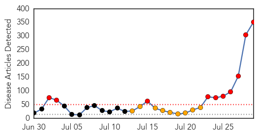
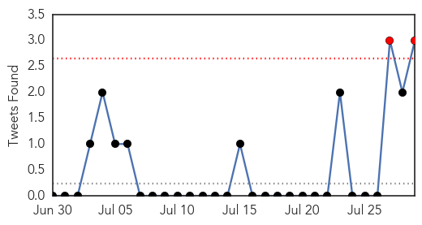
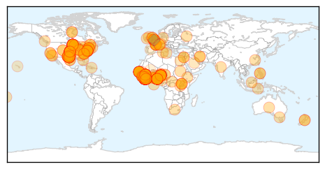
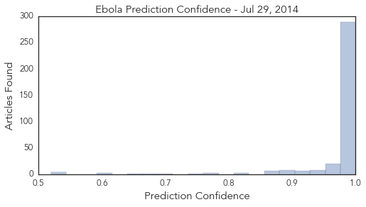

Toggle navigation
Early Warning
Daily Alerts
Ebola
Jul 29, 2014
Compare to:
-
Dengue Fever
Hemmorhagic Fever
Mold/Fungal Infection
Influenza
Meningitis
Pertussis / Whooping Cough
Middle East Respiratory Syndrome
Cholera
Hepatitis
Chikungunya
Yellow Fever
Bubonic Plague
West Nile Virus
Swine Flu
Measles
Unknown
Mumps
30 Day Trends
Web: 10
alerts
, 9
warnings
Twitter: 2
alerts
, 0
warnings
Top Articles:
Showing top 50 articles...
1.000
Deadly Ebola virus outbreak sparks travel warning
1.000
Ebola plane travel scare has officials on edge
1.000
Ebola fears hit close to home
1.000
Ebola: what you need to know
1.000
Officials Seek Contacts of Ebola Victim Who Died in Nigeria
1.000
New Fears Rise Over Spread of Ebola
1.000
Top Ebola doctor, Sheikh Umar Khan, died of Ebola in Sierra Leone
1.000
New fears about Ebola spread after plane scare in Africa
1.000
Sick man with Ebola who boarded plane shows weaknesses in stopping deadly disease’s spread
1.000
Ebola: 5 Things You Should Know
1.000
The return of Ebola and the spread of fear
1.000
New fears about Ebola spread after plane scare
1.000
Top Ebola doctor dies from virus
1.000
Ebola only a plane ride away from USA
1.000
New Fears about Ebola Spread after Plane Scare
1.000
Two Americans, Freetown resident latest Ebola victims
1.000
Why you should be worried about the worst Ebola outbreak in history
1.000
Ebola Outbreak Spreads To Nigeria; Hospital Quarantined After Country’s First Case
1.000
Ebola Plane Travel Scare Has Officials On Edge
1.000
Minnesotans concerned about Ebola outbreak
1.000
What To Know About The Deadly Disease
1.000
Homeland Security News Wire
1.000
Gov’t has no cash to fight ebola
1.000
Is the deadly Ebola virus on the way to the UK?
1.000
How deadly Ebola has spread across the globe: Health officials try to trace 30,000 linked to death of US victim - as Nigerian film star sparks outrage by fleeing Africa first-class in an Ebola mask
1.000
Australian doctor Glenn Marsh tasked with trying to find cure for Ebola virus
1.000
Ebola victim Patrick Sawyer who sparked global fears was American
1.000
Ebola victim Patrick Sawyer who sparked global fears was American
1.000
Ebola victim Patrick Sawyer who sparked global fears was American
1.000
Sierra Leone's top Ebola doctor dies after contracting the virus
1.000
Sierra Leone's top Ebola doctor dies after contracting the virus
1.000
Ebola warning issued as hospitals could be 'ill-equipped' if virus spreads to UK
1.000
Ebola warning issued as hospitals could be 'ill-equipped' if virus spreads to UK
1.000
Is Ebola, the world's deadliest disease on its way to Britain?
1.000
Ebola Outbreak can Threaten Global Safety
1.000
Ebola plane travel scare has officials on edge
1.000
Sheik Umar Khan, top Ebola doctor, dies from virus after treating dozens
1.000
Sheik Umar Khan, top Ebola doctor, dies from virus after treating dozens
1.000
New fears about Ebola spread after plane scare
1.000
Why Ebola is so dangerous
1.000
New Fears about Ebola spread after plane scare
1.000
ABC-7.com WZVN News for Fort Myers, Cape Coral & Naples, Florida
1.000
First U.S. citizen killed in African Ebola outbreak
1.000
Doctor From Christian Ministry Gets Ebola Virus
1.000
Nigeria admits precise number of people Ebola victim could have infected is not known as 59 people are placed under close surveillance
1.000
UK doctors sound alarm over potential Ebola outbreak — RT UK
1.000
Top Ebola doctor dies of virus in Sierra Leone — RT News
1.000
5 Things to Know About the Recent Ebola Outbreak
1.000
Why Deadly Ebola Virus Is Likely to Hit the U.S. But Not Spread
1.000
An overview of the new, and serious, Ebola outbreak in Africa
Top Tweets:
0.760
RT: The 39-yr-old hero of SierraLeone battle against Ebola Dr. Sheik Umar Khan has died of the disease. Heartbreaking. ht…
0.740
RT: Death was all that hazmat-suited medical workers seemed to bring. So people fled making the outbreak worse. ebola ht…
0.562
RT: .@CDCgov gives guidance on cleaning a plane if a symptomatic Ebola patient has been onboard. Soiled seat = biohazard h…
Web/News Articles

Tweets

Article Locations

Article Confidences
